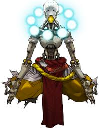

Lucio takes his beat and uses it in battle. Lucio has 200 health and wields a gun called sonic amplifier and has 3 abilities: wall ride, crossfade, and amp it up. The wall ride ability lets him wide on walls and lets him be 30% more faster than on the ground and also gets a boost when jumping off the wall. Lucio's crossfade ability lets him be able to switch from healing to speed. His healing does 18.75 per second and has an area of effect. Lucio's speed lets teamates around him be 30% faster than normal speed. The area of effect range is 30 meters and his amp it up ability lets everyone around him move 70% faster when on speed. Also on healing he does 36 per second and lasts 3 seconds for both. This ability has a cooldown of 12 seconds and still has the same amount of radius. Lucio's ultimate ability is called sound barrier and this has an area of effect of 30 meters and gives everyone 500 temorary health for 6 seconds. Lucio's sonic amplifier has a projectile speed of 50 meters per second and does 16 damage per projectile. This weapon has 20 ammo and has shoots 4 rounds at a time.
Zenyatta is a omnic monk and people say the path that he has taken, the person will never be the same. Zenyatta has 50 health and 150 shields and uses his orbs as weapons. The 2 abilites that he has are: Discord orb, and Harmony orb. Discord orb is used by pressing a button and puts an orb on the enemy. Once this orb has reached the target the target now takes 30% more damage. This ability stays on the enemy as long as they are in sight. The maximum range is 40 meters and cannot be deflected. Harmony orb is used by pressing a button and heals for 30 health per second. Same as the discord orb it stays on them for 3 seconds if not in sight. The maximum range is 40 meters and cannot be deflected. Zenyatta's ultimate ability is called Transcendence and anyone that is in a 10 meter randius is healed 300 health per second. This ability lasts for 6 seconds and Zenyatta cannot be hurt while in this ability. However, Zenyatta can still be pushed and grabbed while in the ultimate. Zenyatta's weapon are his orbs these orbs do 46 damage and has 20 ammo. His alternate fire launches 5 of his orbs as long as it is fully charged. These orbs still do 46 damage, although they are released rapidly.